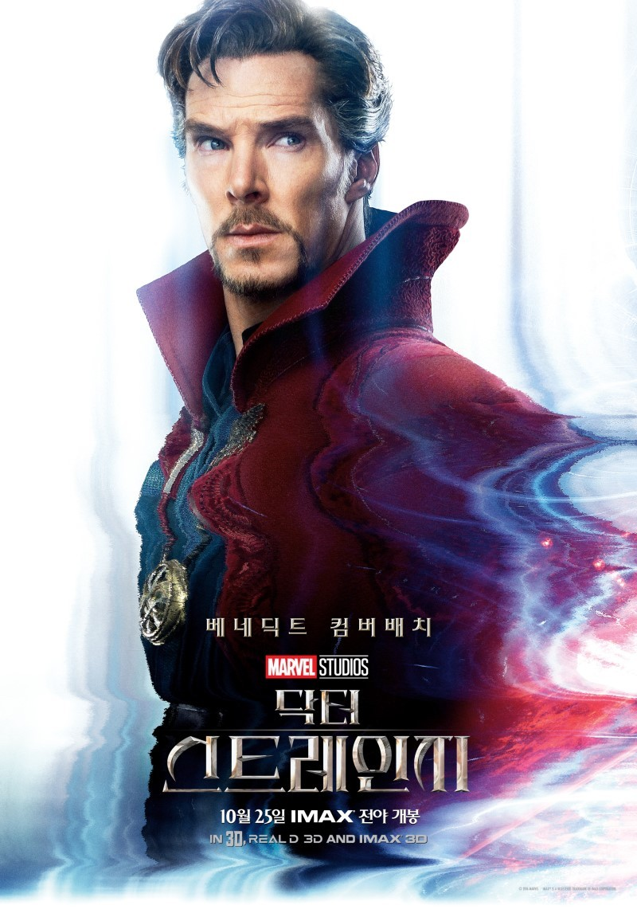

케실리우스는 자신의 추종자 아홉명을 이끌고 밤에 카마르 타지 도서관을 기습하여서 사서의 목을 잘라 죽이고, 카글리오스트로의 책에서 한 페이지를 훔쳐간다.
에인션트 원은 캐실리우스 일당을 미러 디멘션에 가둔 후 공간조작으로 죽이려 하지만 캐실리우스와 살아남은 제자 셋은 게이트웨이를 통해서 도망친다. 이후 카글리오스트로의 책에서 훔쳐낸 페이지로 다크 디멘션의 힘을 얻는 의식을 거행하고, 남은 세 제자와 캐실리우스는 눈이 다크 디멘션의 힘으로 인해 깨진 스테인드글라스처럼 변하게 된다.